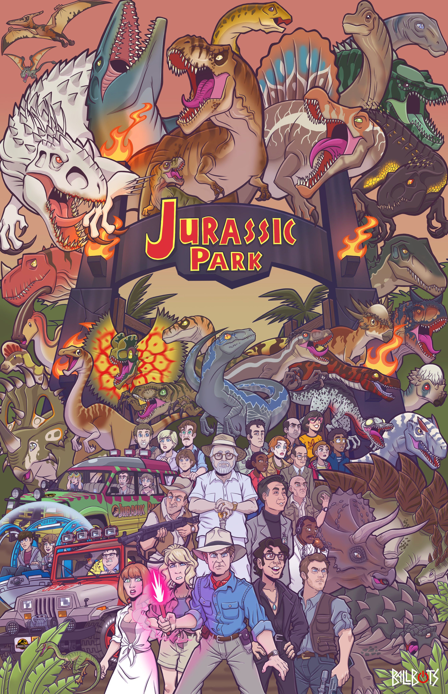

About the Jurassic Park / Jurassic World Franchise
- Franchise Overview
-
The Jurassic Park / Jurassic World franchise is a popular series of science fiction adventure films
that began with Jurassic Park in 1993, directed by Steven Spielberg. Based on Michael Crichton’s novel,
the story imagines a world where scientists use ancient DNA to bring dinosaurs back to life.
- Themes & Impact
-
The franchise explores themes of science, nature, and human ambition — showing the excitement
and dangers of trying to control creatures from the past. Over the years, it has grown into a worldwide phenomenon
with multiple movies, video games, books, toys, and theme park attractions.
- Jurassic World Era
-
The more recent Jurassic World series (starting in 2015) continues the story for a new generation, showing a
fully functioning dinosaur theme park and the unexpected chaos that follows when science pushes boundaries too far.
- Core Message
-
At its core, the franchise combines thrilling dinosaur adventures with important lessons about
responsibility, respect for nature, and the limits of technology.